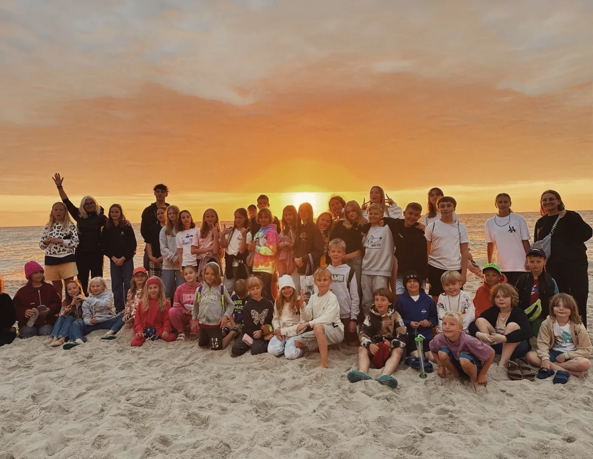
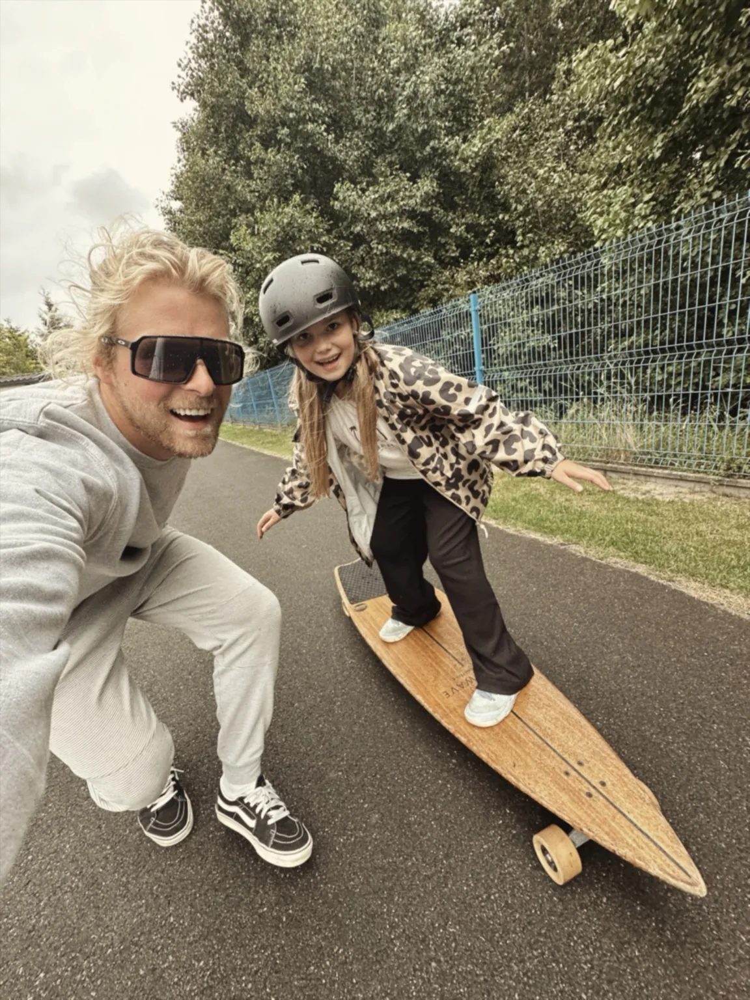

BIURO PODRÓŻY I FORMALNOŚCI
Organizacja wyjazdów zgodnie z obowiązującymi przepisami.

Dobra przygoda zaczyna się od poczucia bezpieczeństwa!
Od początku tworzenia LONGWAVE zależy nam na tym, żeby każdy uczestnik czuł się komfortowo, swobodnie i bezpiecznie.
Wiemy, jak dużym zaufaniem obdarzają nas rodzice, powierzając nam swoje dzieci. Dlatego dbamy nie tylko o świetny program, sprawdzone miejsca i dobrą atmosferę, ale również o wszystko, co dzieje się za kulisami organizacji wyjazdów.
Jesteśmy biurem podróży, organizatorami, ale przede wszystkim ludźmi, którzy traktują tę pracę z ogromną odpowiedzialnością.
Za każdą wspólną przygodą stoją miesiące przygotowań, doświadczeni ludzie, odpowiednie zabezpieczenia i cała masa formalności, o których uczestnicy często nawet nie wiedzą.
I bardzo dobrze! Bo to my jesteśmy od tego, żeby o nie zadbać.
Dużo przygód, nowych wyzwań i dobrej zabawy. Ale zawsze z głową!
Organizacja wyjazdów zgodnie z obowiązującymi przepisami.
Odpowiednia ochrona uczestników i zabezpieczenie finansowe organizatora.
Wykwalifikowani wychowawcy i instruktorzy z pasją do pracy z ludźmi.
Indywidualne podejście, uważność i dobry kontakt z rodzicami.
LONGWAVE to nie tylko marka, obozy i wydarzenia. To również działalność organizatora turystyki, z którą wiąże się konkretna odpowiedzialność.
Tworząc wyjazdy, dbamy o ich organizację również od strony formalnej.
Umowy, dokumentacja, zgłoszenia, odpowiednie zabezpieczenie finansowe i ubezpieczenia - to wszystko jest równie ważne jak sam program.
Jako organizator turystyki działamy w ramach przepisów regulujących organizację imprez turystycznych, w tym wymagań dotyczących zabezpieczenia finansowego na wypadek niewypłacalności organizatora.
W przypadku imprez objętych odpowiednimi przepisami znaczenie mają również Turystyczny Fundusz Gwarancyjny (TFG) i Turystyczny Fundusz Pomocowy (TFP).
W skrócie? Za naszymi wyjazdami stoi nie tylko pasja, ale również formalna odpowiedzialność za ich organizację.
Organizacja wyjazdu dla dzieci i młodzieży wymaga szczególnego przygotowania.
Zgłoszenie wypoczynku do właściwego kuratorium oświaty i ujęcie go w bazie wypoczynku Ministerstwa Edukacji Narodowej, odpowiednia dokumentacja, kwalifikacje kadry oraz warunki zakwaterowania to elementy, które muszą zostać dopięte przed rozpoczęciem obozu.
Dbamy również o:
To duża część naszej pracy, której nie widać na zdjęciach z obozów.
Ale właśnie dzięki odpowiedniemu przygotowaniu możemy skupić się później na tym, co najważniejsze uczestnikach i ich wspólnej przygodzie.
Kadry LONGWAVE



To dwie różne rzeczy, które warto wyjaśnić.
Gwarancja ubezpieczeniowa organizatora turystyki lub inna przewidziana przepisami forma zabezpieczenia finansowego służy ochronie środków podróżnych w określonych sytuacjach, przede wszystkim w razie niewypłacalności organizatora.
System ten, w przypadkach objętych jego zakresem, uzupełnia Turystyczny Fundusz Gwarancyjny.
Niezależnie od zabezpieczenia finansowego organizatora, ważne jest odpowiednie ubezpieczenie osób biorących udział w wyjeździe.
W zależności od charakteru obozu uwzględniamy ubezpieczenie NNW, a przy wyjazdach zagranicznych również odpowiednią ochronę związaną z kosztami leczenia i podróżą.
Szczegółowy zakres ubezpieczenia, sumy i warunki ochrony przekazujemy w dokumentacji konkretnego wyjazdu.
Chcemy, żeby rodzice wiedzieli nie tylko, dokąd jedzie ich dziecko, ale również na jakich zasadach organizowany jest cały pobyt.
LONGWAVE tworzymy we dwójkę Zuzia i Tomek.
Od pierwszego pomysłu, przez przygotowanie programu, wybór miejsc i współpracowników, aż po realizację samego wyjazdu.
Na naszych obozach jesteśmy obecni osobiście. Nie organizujemy ich wyłącznie zza biurka!
Znamy uczestników, rozmawiamy z nimi, wspieramy ich podczas nowych wyzwań i jesteśmy częścią codziennego życia obozowego.
Dzięki temu możemy na bieżąco obserwować atmosferę w grupie, reagować na potrzeby uczestników i dbać o szczegóły, które wpływają na komfort całego wyjazdu.
Bo dla nas liczy się nie tylko to, co robimy, ale przede wszystkim, jak czują się z nami ludzie.

Za LONGWAVE stoją ludzie, którzy naprawdę lubią to, co robią!
Naszą ekipę tworzą doświadczeni wychowawcy, instruktorzy sportowi, nauczyciele wychowania fizycznego oraz osoby z przygotowaniem ratowniczym.
Łączy nas sportowa zajawka, ale przede wszystkim umiejętność pracy z dziećmi i młodzieżą.
Wiemy, kiedy zmotywować, kiedy wesprzeć, a kiedy po prostu usiąść, porozmawiać i wysłuchać.
Ważne są dla nas nie tylko kwalifikacje, ale również podejście, odpowiedzialność i zaangażowanie.
Zależy nam, żeby każdy uczestnik wiedział, do kogo może zwrócić się z problemem, pytaniem lub potrzebą pomocy.
Nasze obozy od początku bazują na kameralnych grupach.
Dlaczego? Bo sami wiemy, jak dużo to zmienia!
Dzięki mniejszej liczbie uczestników łatwiej nam poznać każdego z osobna, zauważyć jego potrzeby i zadbać o komfort podczas wspólnego wyjazdu.
Nie każdy od razu odnajduje się w nowym miejscu. Dla jednych pierwszy obóz to ogromna ekscytacja, dla innych również trochę stresu.
Chcemy tworzyć atmosferę, w której każdy może poczuć się częścią ekipy -bez presji i niepotrzebnego porównywania się z innymi.
Każdy uczestnik jest inny. I właśnie dlatego tak ważne jest dla nas indywidualne podejście.
Sporty wodne to ważna część LONGWAVE, dlatego współpracujemy z profesjonalnymi szkołami i doświadczonymi instruktorami.
Windsurfing, kitesurfing czy wing foil wymagają odpowiedniego sprzętu, przygotowania i uwzględnienia warunków panujących na wodzie.
Podczas zajęć dbamy o:
Nie każdy uczestnik musi od razu wskakiwać na głęboką wodę!
Dajemy przestrzeń na naukę krok po kroku, oswajanie się ze sprzętem i zdobywanie pewności siebie.
Każdy ma swoje tempo. A my jesteśmy od tego, żeby go w tym wspierać!

Wybierając lokalizacje obozów, zwracamy uwagę nie tylko na piękne otoczenie i dostępne atrakcje.
Ważne są dla nas również warunki zakwaterowania, infrastruktura, bezpieczeństwo obiektu i możliwość realizacji programu.
Planujemy dni tak, żeby znalazł się czas zarówno na sport i nowe wyzwania, jak i odpoczynek.
Wiemy też, że nie zawsze wszystko przebiega dokładnie według harmonogramu.
Pogoda się zmienia, wiatr czasami robi sobie przerwę, a grupa może potrzebować spokojniejszego dnia.
Dlatego jesteśmy elastyczni i w razie potrzeby modyfikujemy plan.
Dobra organizacja to również umiejętność reagowania na to, co dzieje się tu i teraz.
Pierwsza pomoc jest dla nas czymś naprawdę ważnym!
Dlatego w programie wielu naszych obozów i wydarzeń pojawiają się warsztaty, podczas których uczestnicy mogą zdobywać praktyczną wiedzę.
Uczymy, jak reagować w trudnych sytuacjach, kiedy wezwać pomoc i dlaczego warto zwracać uwagę nie tylko na siebie, ale również na innych.
Chcemy przekazywać te umiejętności już najmłodszym.
Bo bezpieczeństwo to także świadomość, odpowiedzialność i umiejętność pomagania sobie nawzajem.
Rozumiemy, że wyjazd dziecka, szczególnie ten pierwszy, może wiązać się z wieloma pytaniami.
Dlatego zależy nam na dobrej komunikacji zarówno przed obozem, jak i podczas jego trwania.
Przed wyjazdem przekazujemy niezbędne dokumenty, informacje organizacyjne i listę rzeczy do zabrania.
Podczas obozów dziecięcych kierownik oraz wychowawcy pozostają do dyspozycji rodziców.
Na LONGWAVE CAMP telefony komórkowe udostępniamy uczestnikom raz dziennie na godzinę.
Chcemy, żeby dzieci naprawdę pobyły razem, poznawały nowych ludzi, rozmawiały, próbowały nowych aktywności i odpoczywały od ekranów.
Jednocześnie zapewniamy możliwość kontaktu z kadrą w ważnych sprawach.
Zależy nam, żeby przed wyjazdem jak najlepiej poznać potrzeby uczestników.
Dlatego prosimy rodziców o przekazanie istotnych informacji dotyczących zdrowia, alergii, przyjmowanych leków oraz innych kwestii, które mogą mieć znaczenie podczas pobytu.
Jeśli dziecko jedzie pierwszy raz, ma szczególne potrzeby albo obawia się rozłąki z domem - porozmawiajmy o tym wcześniej.
Chcemy wiedzieć, jak możemy je wesprzeć.
Nie ma dla nas dwóch identycznych uczestników. Każdy ma swój charakter, emocje, możliwości i potrzeby.
Organizując LONGWAVE CAMP, chcemy tworzyć wyjazdy, na których uczestnicy nie tylko świetnie się bawią, ale też rozwijają samodzielność, zdobywają nowe umiejętności i nabierają pewności siebie.
Dbamy o atmosferę, ludzi, program i formalną stronę organizacji.
A kiedy po obozie otrzymujemy od rodziców wiadomości, że dziecko wróciło szczęśliwe, odważniejsze i już pyta o kolejny wyjazd - to jest dla nas coś naprawdę DUZEGO!
Dziękujemy za zaufanie, którym nas obdarzacie.
Traktujemy je bardzo poważnie. 🧡
Zuzia i Tomek
Porozmawiajmy o Twoim wyjeździe
Opowiedz nam, co planujesz. Pomożemy dobrać wyjazd, termin lub program dla Twojej grupy.